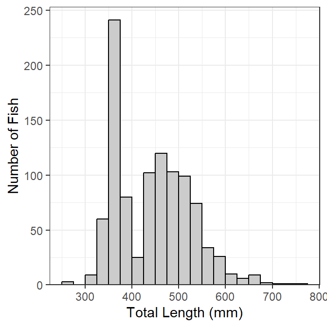
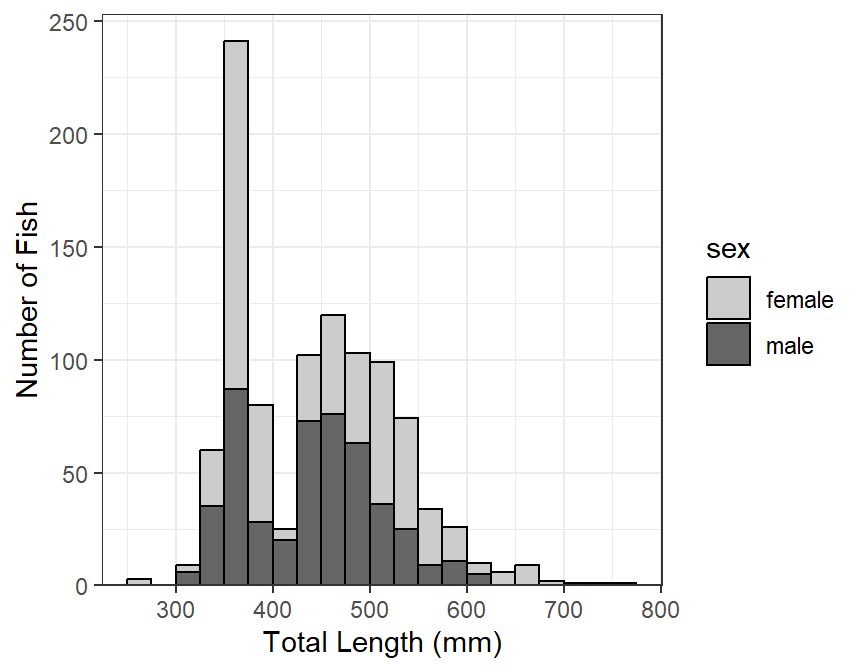
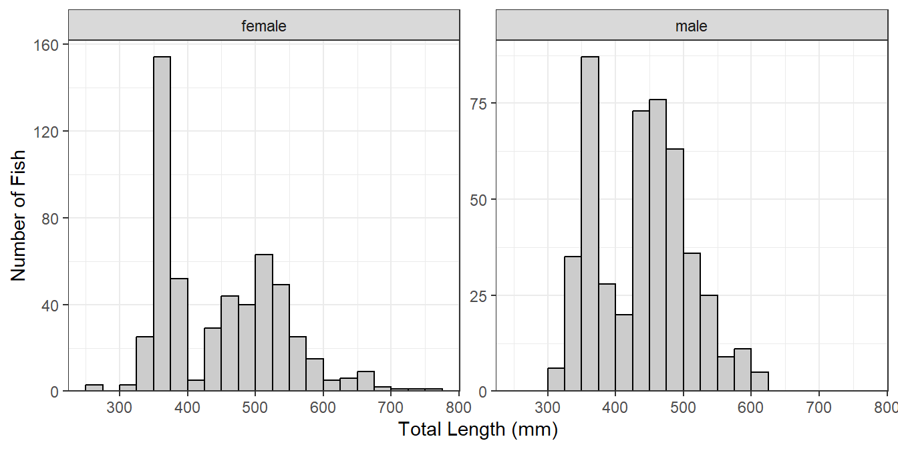
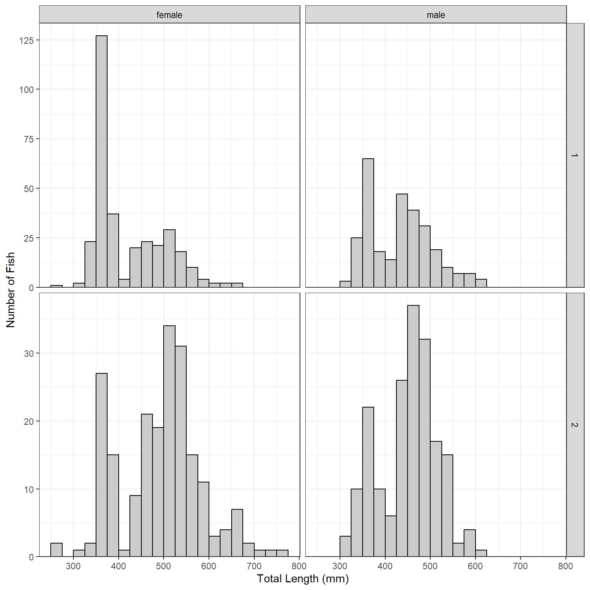

Length Frequency Histograms in ggplot2
The following packages are loaded for use below. I also set the default ggplot theme to theme_bw() for a classic “black-and-white” plot (rather than the default plot with a gray background).
Introduction
A common graphic produced by many fisheries scientists is a length frequency histogram. As it turns out there are a few “tricks” to make a length frequency histogram appear as I expect most fisheries folks would want it to appear – primarily, left-inclusive (i.e., 100 would be in the 100-110 bin and not the 90-100 bin). In this post, I show how to construct a length frequency histograms with ggplot2 using my preferences.
The data are lengths of Lake Erie Walleye (Sander vitreus) captured during October-November, 2003-2014.1 My primary interest is in the tl (total length in mm), sex, and loc variables2 and I will focus on 2014 (as an example).
Basic Length Frequency
Making the histogram (Figure 1) begins by identifying the data frame to use in data= and the tl variable to use for the x-axis as an aes()thetic in ggplot(). The histogram is then constructed with geom_histogram(), which I customize as follows:
- Set the width of the length bins with
binwidth=. - By default the bins are centered on breaks created from
binwidth=. The bins can be changed to begin on these breaks by usingboundary=set to the desired value of a first break, regardless of whether that break is in the data or not. I useboundary=0so that bins will start on breaks that make sense relative tobinwidth=(e.g., 0, 25, 50, 75, etc.). - Bins are left-exclusive and right-inclusive by default. Use
closed="left"to make the bins the desired left-inclusive and right-exclusive. - The fill color of the bins is set with
fill=(I prefer a slight gray). - The outline color of the bins is set with
color=(defaults to the same asfill=; I prefer a dark boundary to make the bins obvious).
The scale_y_continuous() and scale_x_continuous() are primarily used to provide labels (i.e., names) for the y- and x-axes, respectively. By default, the bins of the histogram will “hover” slightly above the x-axis, which I find annoying. The expand= in scale_y_continuous() is used to expand the lower limit of the y-axis by a multiple of 0 (thus, not expand the lower-limit) and expand the upper limit of the y-axis by a multiple of 0.05 (thus, the upper-limit will by 5% higher than the tallest bin so that the top frame of the plot will not touch the tallest bin).3
lenfreq1 <- ggplot(data=WE,aes(x=tl)) +
geom_histogram(binwidth=25,boundary=0,closed="left",
fill="gray80",color="black") +
scale_y_continuous(name="Number of Fish",expand=expansion(mult=c(0,0.05))) +
scale_x_continuous(name="Total Length (mm)")
lenfreq1
This base object/plot can be modified by adding (using +) to it as demonstrated later.
Stacked by Other Variable
It may be useful to see the distribution of categories of fish (e.g., sex) within the length frequency bins (Figure 2). To do this, add fill= in the aes()thetic in ggplot() and set it equal to the variable that identifies the separation within each bin (e.g., sex). The bins will be stacked by this variable if position="stack" in geom_histogram().4 The fill colors for each group can be set in a number of ways, but they are set manually below with scale_fill_manual().
lenfreq2 <- ggplot(data=WE,aes(x=tl,fill=sex)) +
geom_histogram(binwidth=25,boundary=0,closed="left",
color="black",position="stack") +
scale_fill_manual(values=c("gray80","gray40")) +
scale_y_continuous(name="Number of Fish",expand=expansion(mult=c(0,0.05))) +
scale_x_continuous(name="Total Length (mm)")
lenfreq2
Stacked histograms are difficult to interpret in my opinion. In a future post, I will show how to use empirical density functions to examine distributions among categories. For the time being, see below.
Separated by Other Variable(s)
A strength of ggplot2 is that it can easily make the same plot for several different levels of another variable; e.g., separate length frequency histograms by sex (Figure 3). The plot (e.g., lenfreq from above) can be separated into different “facets” with facet_wrap(), which takes the variable to separate by within vars() as the first argument.
lenfreq1 + facet_wrap(vars(sex))
If the faceted groups have very different sample sizes then it may be useful to use a potentially different y-axis scale for each facet by including scales="free_y" in facet_wrap() (Figure 4). Similarly, a potentially different scale can be used for each x-axis with scales="free_x" or for both axes with scales="free".
lenfreq1 + facet_wrap(vars(sex),scales="free_y")
Plots may be faceted over multiple variables with facet_grid() (Figure 5), where the variables that identify the rows and variables for a grid of facets are included (within vars()) in rows= and cols=, respectively. Both scales can not be “free” with facet_grid(), the scale can only be “free” within a row or column.
lenfreq1 + facet_grid(rows=vars(loc),cols=vars(sex),scales="free_y")
Footnotes
These data are available in the
FSAdatapackage and formed many of the examples in Chapter 12 of the Age and Growth of Fishes: Principles and Techniques book.↩︎The resultant plot was assigned to an object so that name must be typed and run to see the plot.↩︎
This is the default and would not need to be explicitly set below).↩︎
Reuse
Citation
@online{h.ogle2019,
author = {Derek H. Ogle},
editor = {},
title = {Length {Frequency} {Histograms} in Ggplot2},
date = {2019-12-28},
url = {https://fishr-core-team.github.io/fishR//blog/posts/2019-12-28_Length_Frequency_Histograms},
langid = {en}
}